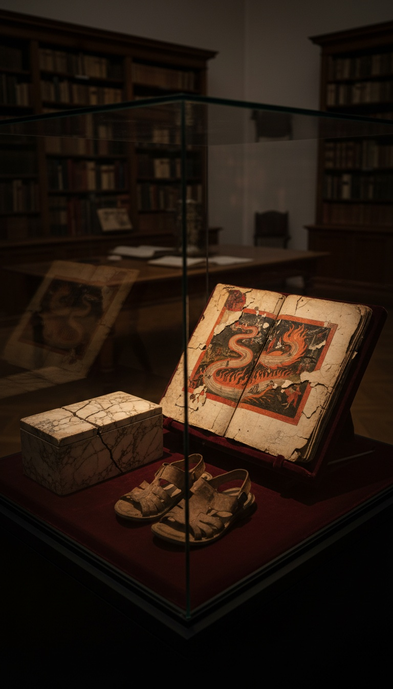

Dante's Hell was copied from a book the Church banned, and Dante admitted it in the second canto of the Inferno.
The book is the Apocalypse of Paul. It was written in Greek in the late fourth century, then translated into Latin, and monks across Europe kept copying it for a thousand years. Augustine called it a forgery full of fables. A sixth-century church list branded it apocryphal. Then a Florentine exile wrote the most famous poem in Europe and opened it by naming Paul as the one man who walked into the other world before him.
Follow the map. It runs straight from a sealed box in Tarsus to the gates of the Inferno.

The Marble Box Under Paul's House
The Latin preface tells the discovery story with the precision of a court record. In 388, the year Emperor Theodosius shared the consulship with Cynegius, an angel appeared to a man living in the house of the apostle Paul in Tarsus. Tarsus is the city in southern Turkey where Paul was born. The angel ordered him to break open the foundations.
He dug. Beneath the house he found a marble box. Inside lay the written revelation and the shoes Paul wore while he walked the roads preaching. The text went up the chain to Theodosius himself, who sent a copy to Jerusalem.
The book claims to be the vision Paul describes in 2 Corinthians 12. There Paul says he was caught up into paradise and heard "unspeakable words, which it is not lawful for a man to utter." The Bible kept those words locked away. The box under his house opened them.
Rivers of Fire, Sinners Sunk by Depth
An angel leads Paul out of his body and across both halves of the afterlife. First comes the City of Christ, walled in gold, fed by four rivers of honey, milk, wine and oil. Then the angel turns him toward the setting sun and the dark, to a river boiling with fire.
The damned stand in that river at different depths. Some are sunk to their knees, some to the navel, some to the lips, some to the eyebrows. The angel explains each level. Those who gossiped after church stand to the knees. Those who slandered each other inside the church burn to the lips. The deeper the sin, the deeper the fire.
That is the engine of Dante's whole Inferno. Punishment is measured to the sin and stacked in layers, each level worse than the one above it. Italian scholars call it contrapasso. The Apocalypse of Paul was running it nine centuries earlier.
The clergy burn too. Paul watches four angels drag an old presbyter into the river for neglecting his office. A bishop is thrown in after him. A deacon who devoured the offerings stands in the fire with his hands bleeding. Dante went further and planted popes head first in burning holes in Canto XIX, but he learned that move from Paul's tour.
Then the angel brings Paul to a well. It is sealed with seven seals. The angel tells him to stand back, and when the seals break, a stench rises out of the pit that is worse than every torment above it. This is the deepest place, kept for those who denied that Christ came in the flesh.
He looked into a well sealed with seven seals, and the angel told him to stand back, because the stench rising from the pit was worse than every fire above it.
Before any soul enters the City of Christ, the archangel Michael washes it in the Acherusian Lake. Open Dante's Canto III. The first river his pilgrim must cross is the Acheron.
Canto Two: The Chosen Vessel Went First
Dante sets the Inferno at Easter of 1300. Lost in a dark wood, he is offered the tour by Virgil, and in Canto II he balks. He lists the living men who entered the other world before him. Aeneas is the pagan. Then line 28: "Andovvi poi lo Vas d'elezione." Afterward the Chosen Vessel went there.
The Chosen Vessel is Paul. The title comes from Acts 9:15, where God calls him "vas electionis" in the Latin Vulgate Dante read. Dante says Paul made the journey to bring back comfort to the faith. That is the exact purpose the Apocalypse of Paul gives its own tour: go down, see everything, report back.
M. R. James saw it. The Cambridge scholar, Provost of Eton when he translated the text in The Apocryphal New Testament (Oxford, 1924), called Dante's line "an undoubted allusion" to the banned book.
Commentators who want the poem clean route the line back to 2 Corinthians instead. That passage carries Paul up into paradise and shows him exactly zero sinners. Dante puts Paul at the threshold of Hell, as the precedent for a descent. Only one text in Christian history sends Paul down into the fire, and it is the one Augustine wanted erased.
Three Condemnations Across Six Centuries
Augustine fired first. Around 416, in his Tractate 98 on the Gospel of John, he wrote that "vain persons" had forged an Apocalypse of Paul "which the sound Church does not receive, full of I know not what fables." He did not bother to name a single error in it. He only wanted it gone.
The Gelasian Decree followed in the sixth century. This Latin list of approved and rejected books, issued under the name of Pope Gelasius, files "the Revelation which is called Paul's" among the apocrypha.
Around the year 1000, the English abbot Ælfric of Eynsham was still warning his congregations off it. He called the vision a heretics' book and quoted Paul's own line that what he heard cannot be spoken. Six hundred years after Augustine, the Church was still fighting the same manuscript.
The monks never stopped reading it. The historian Sozomen recorded in the 440s, in book seven of his Church History, that most monks of his day prized the Apocalypse of Paul. Three condemnations failed to touch the people who actually held the pens.
The Map Survived in the Scriptoria
The fullest Latin text survives in an early medieval copy now held by the Bibliothèque nationale de France in Paris, catalogued as nouvelles acquisitions latines 1631. James published it in 1893. It is one of dozens.
The book spread into Old English, Old French, Provençal, German, Welsh, Irish, Slavonic, Armenian, Syriac, Coptic and Ethiopic. Theodore Silverstein mapped its Latin redactions in his 1935 study Visio Sancti Pauli. Short versions were read aloud from pulpits across Europe for centuries before Dante was born in Florence in 1265.
So Dante grew up inside the banned map. Every Italian who heard a Lenten sermon on the torments had heard Paul's rivers and depths. When Dante wrote Canto II, his readers caught the reference instantly. He only gave the tour a new guide, and swapped the angel for Virgil.
The Church kept the Apocalypse of Paul out of the Bible for sixteen centuries. It never got it out of Europe's head. The rivers, the graded depths, the clergy in the fire and the sealed pit all crossed into the Inferno, and the Inferno became the picture of Hell that most of the West still carries.
But Dante left one scene on the cutting room floor. At the end of Paul's tour, Paul weeps over the damned. Michael weeps with him. Then Christ himself comes down and grants every soul in Hell rest from torment every Sunday, forever. Dante's Hell has no day off. The banned book gives the damned one. Dante took the map and cut the mercy. Who wanted that door shut, the poet or the Church that banned the book? Tell me below.
Before you go
7 books the Vatican doesn't want you reading. Free PDF — the texts they cut, with sources. Joined by 140+ Inner Circle members.
No spam. Unsubscribe anytime.
Go deeper
The Hidden Canon, Vol. I — Enoch. Jubilees. Thomas. Mary. Judas. 90 pages, 14 chapters, every receipt cited. The books your Bible quietly removed.
Read the Canon →Books that informed this investigation
As an Amazon Associate, Hidden Epoch earns from qualifying purchases. Cost to you: nothing.
Research safely
The VPN we use to research without being tracked. First 3 months free.
Get NordVPN →